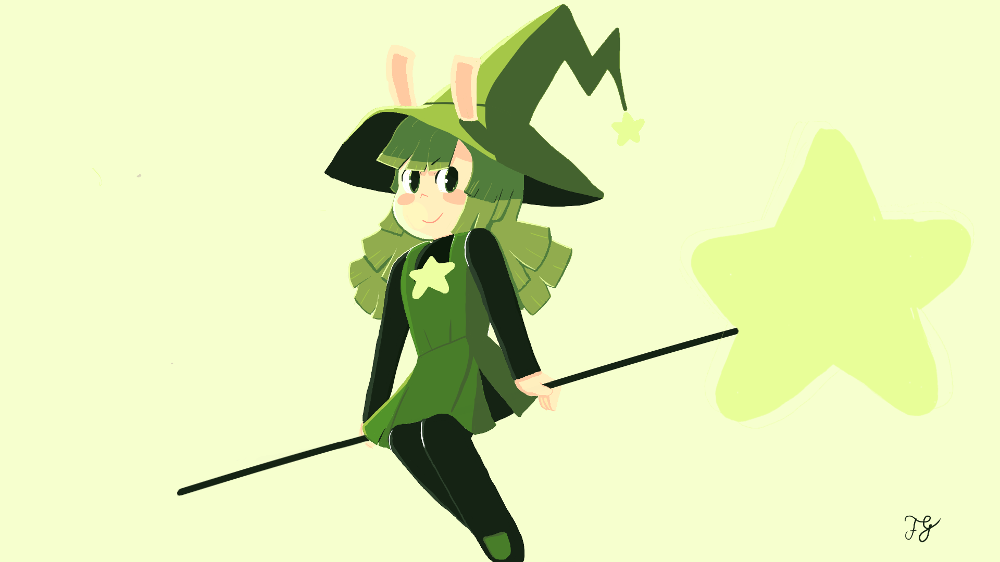

Casa Vermelha Sobre a Colina

Essa é a minha ilustração mais recente e com certeza a minha favorita, dessa vez eu peguei um pequeno grupo de cores primarias que contrastam bem umas com a outras e construi o restante a partir disso. As cores e a composição são definitivamente as partes que eu mais gosto.
Cidade do Relógio

A Cidade do Relógio é uma dos meus desenhos favoritos, nessa ilustração eu tentei mudar como eu trabalhava, tanto invertendo a orientação da imagem como me restringindo a apenas tons de azul. Eu fico feliz com o resultado da torre, da cidade e das nuvens mais altas, mas não gosto muito da água e das núvens na parte inferior. Ainda assim fico contente com o resultado final.

Essas duas são um pouco mais antigas, não tenho muito o que dizer sobre elas. Eu ainda gosto do cavaleiro e principalmente do dragão, mas o cenário deixa bastante a desejar.
Peridot
Essa é a Peridot! Personagem da webcomic Cucumber Quest de Gigi D.G.. Esse foi o meu primeiro desenho em mídia digital e me traz muitas lembranças. Cucumber Quest continua sendo uma das minhas comics favoritas e provavelmente vai continuar assim por um bom tempo.